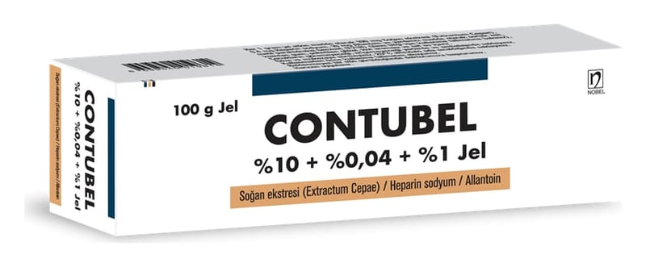

Contubel %10 + %0,04 + %1 Jel , 50 g

Ne için kullanılır
KT · Bölüm 1CONTUBEL deride oluşan nedbelerin tedavisinde etkili olur.
Soğan ekstresi (Extractum Cepae), Heparin sodyum ve Allantoin adlı maddeleri içeren jel yapısında bir üründür.
Her kutuda bir adet 100 g’lık alüminyum tüplerde bulunan formda kullanıma sunulmaktadır.
Ciltte çeşitli nedenlerle oluşmuş yara izi (nedbe) dokularının tedavisinde kullanılır: • Çeşitli yapılardaki yara izleri (nedbe dokuları), • Ameliyat, kol veya bacak gibi çıkıntı şeklinde organların kesilmesi (ampütasyon), yanık ve kaza sonrası hareket kısıtlayıcı ve görüntü olarak rahatsızlık verici yara izleri (nedbeler), • Parmakların avuç içine doğru kasılmış olarak kalmasına neden olan, hareket kısıtlığına yol açan bir rahatsızlık olan Dupuytren kontraktürü,
• Travma sonucu kas kirişlerinde kısalık veya kaslarda kısalık ile hareket kısıtlığına yol açan durumlar (travmatik tendon kontraktürü), • Çukur şeklinde yara izleri (akne izleri gibi). Bu ilacı kullanmaya başlamadan önce bu KULLANMA TALİMATINI dikkatlice okuyunuz; çünkü sizin için önemli bilgiler içermektedir.
• Bu kullanma talimatını saklayınız. Daha sonra tekrar okumaya ihtiyaç duyabilirsiniz. • Eğer ilave sorularınız olursa, lütfen doktorunuza veya eczacınıza danışınız. • Bu ilaç kişisel olarak sizin için reçete edilmiştir, başkalarına vermeyiniz. • Bu ilacın kullanımı sırasında, doktora veya hastaneye gittiğinizde doktorunuza bu ilacı kullandığınızı söyleyiniz. • Bu talimatta yazılanlara aynen uyunuz. İlaç hakkında size önerilen dozun dışında yüksek veya düşük doz kullanmayınız.